This plugin provides the Substance Look and Feel to jEdit. Substance is perhaps the best looking look and feel for Java applications.
Configuration
Screenshots
About Substance
Changes
License
All configuration for this plugin is done in the Look and Feel
plugin.
Go to Plugins - Plugin Options - Look And Feel, then select "Substance"
from the Look and Feel dropdown. You will have the option to choose from
these themes:
Below are a few screenshots of some of the themes combined with various editor color schemes.
Editor schemes may be selected from the Look and Feel plugin options (go to Plugins - Plugin Options - Look And Feel) or the Editor Scheme plugin menu (go to Plugins - Editor Scheme - Scheme Selector).
Autumn
Business
Business Black Steel
Business Blue Steel
Cerulean
Challenger Deep Blue
Creme
Creme Coffee
Dust
Emerald
Gemini
Graphite (my personal favorite)
Magellan
Mist
Nebula
Office Blue
Sahara
Twilight
Autumn theme with Autumn editor scheme:
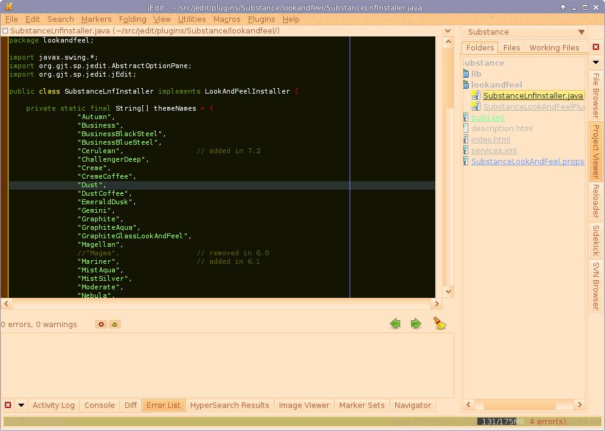
Business theme with danson editor scheme:
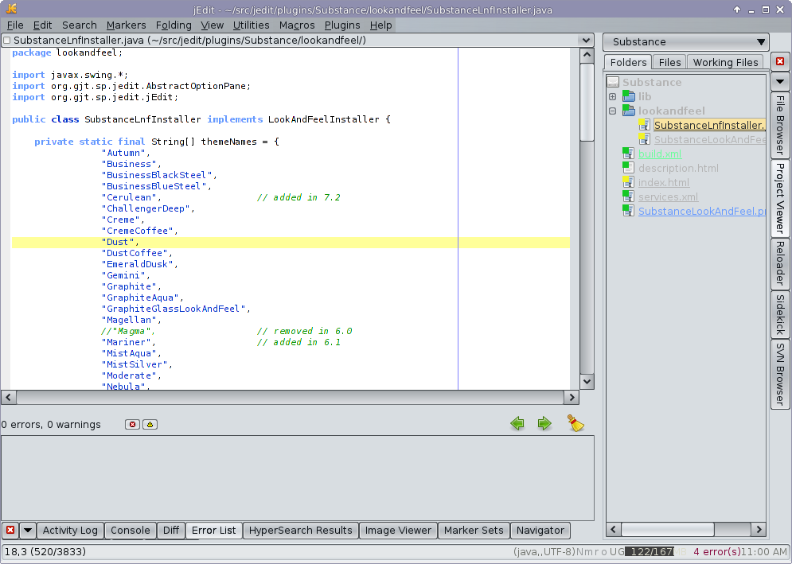
Business Black Steel theme with danson editor scheme:
Business Blue Steel theme with danson editor scheme:

Cerulean theme with danson editor scheme:
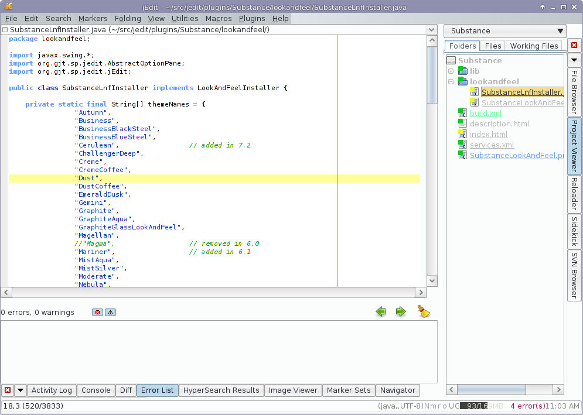
Challenger Deep theme with Blue editor scheme:
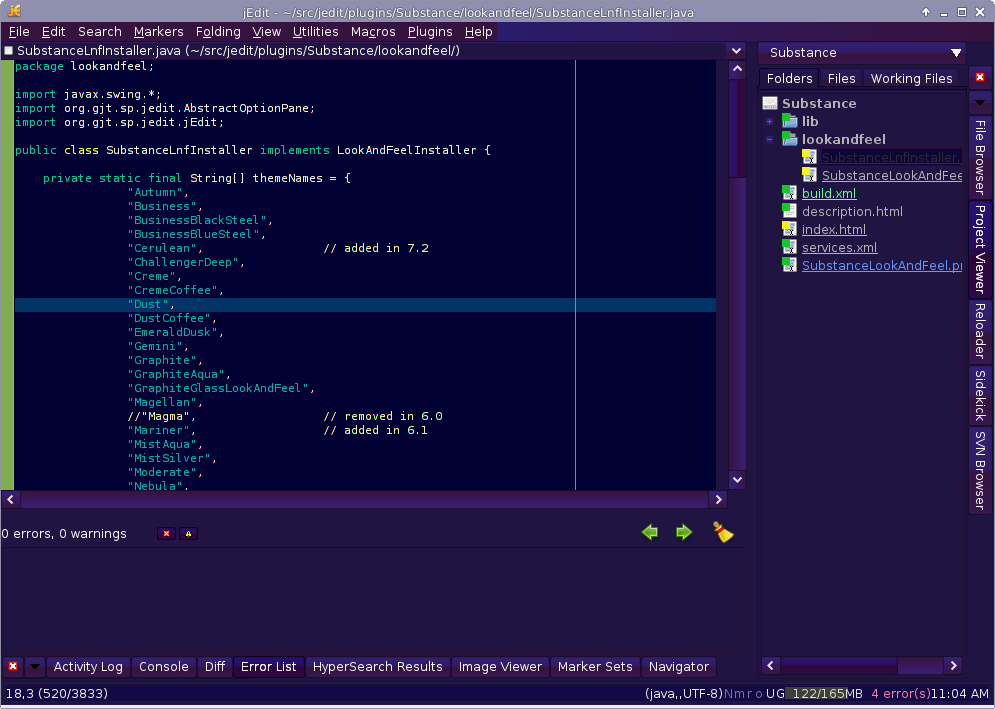
Creme theme with Brad Mace editor scheme:
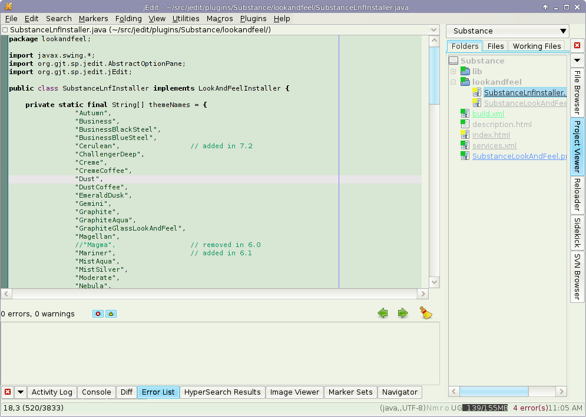
Creme Coffee theme with Mello editor scheme:

Dust theme with March First editor scheme:

Emerald Dusk theme with Green editor scheme:
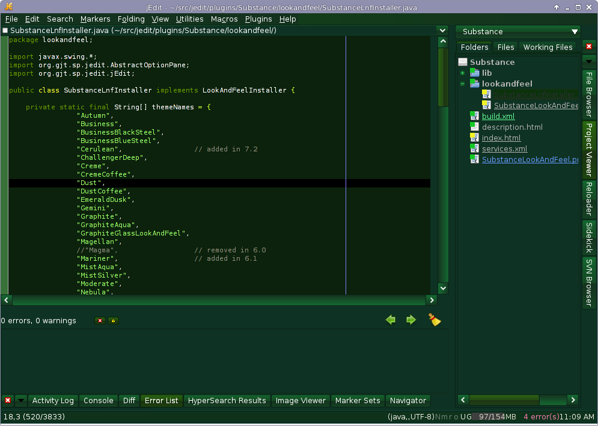
Gemini theme with Erich editor scheme:
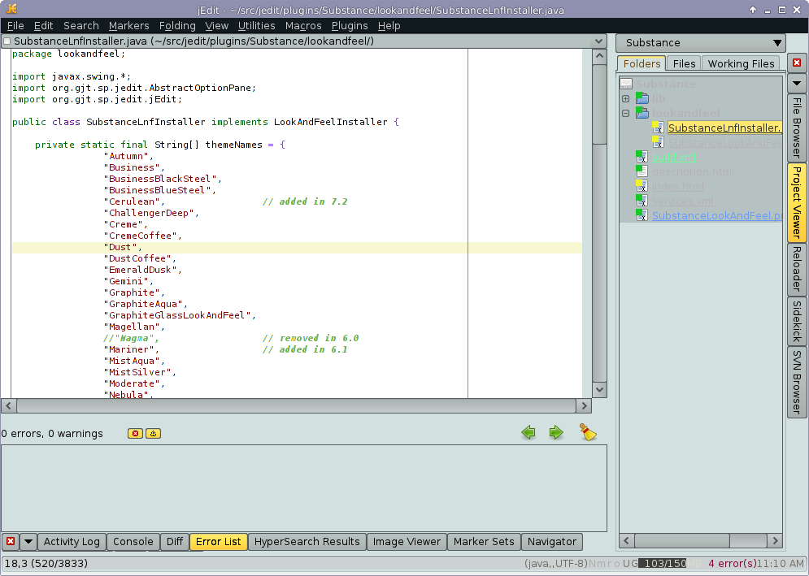
Graphite theme with Zenburn editor scheme, this is my personal favorite:

Magellan theme with Dark Blue editor scheme:
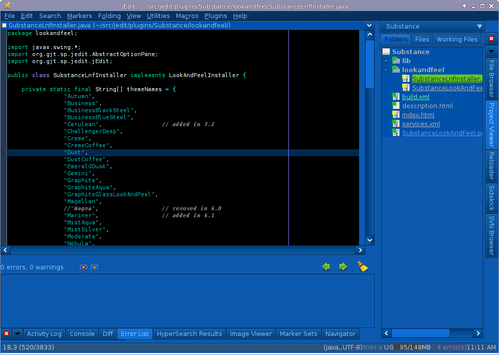
Mist Silver theme with Brad Mace editor scheme:
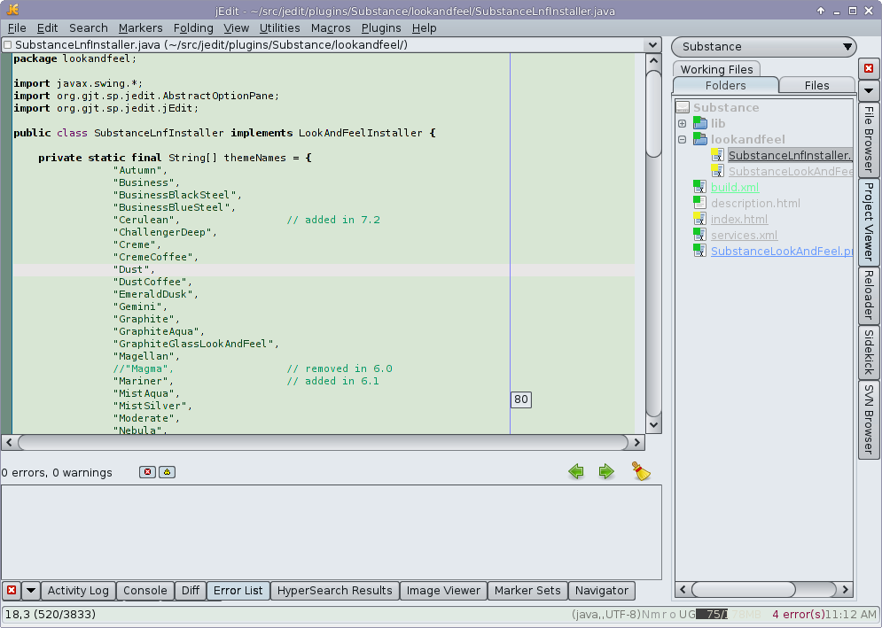
Nebula theme with Mello editor scheme:
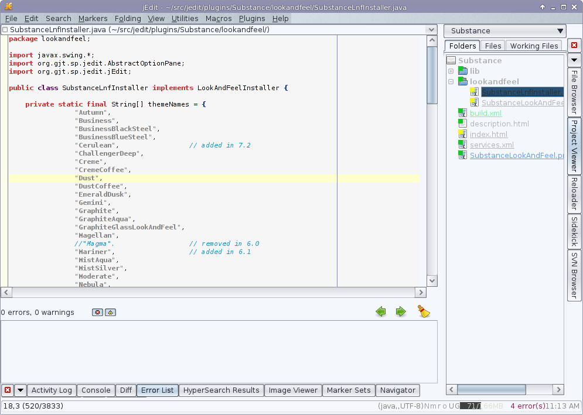
Office Blue 2007 theme with Mello editor scheme:
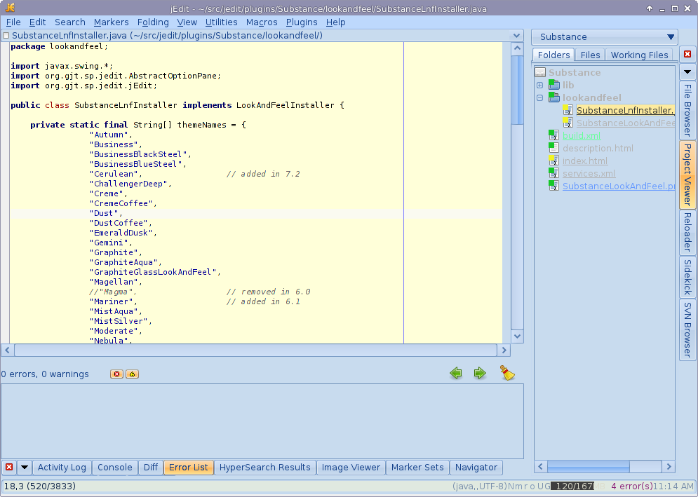
Sahara theme with Flowerpot editor scheme:
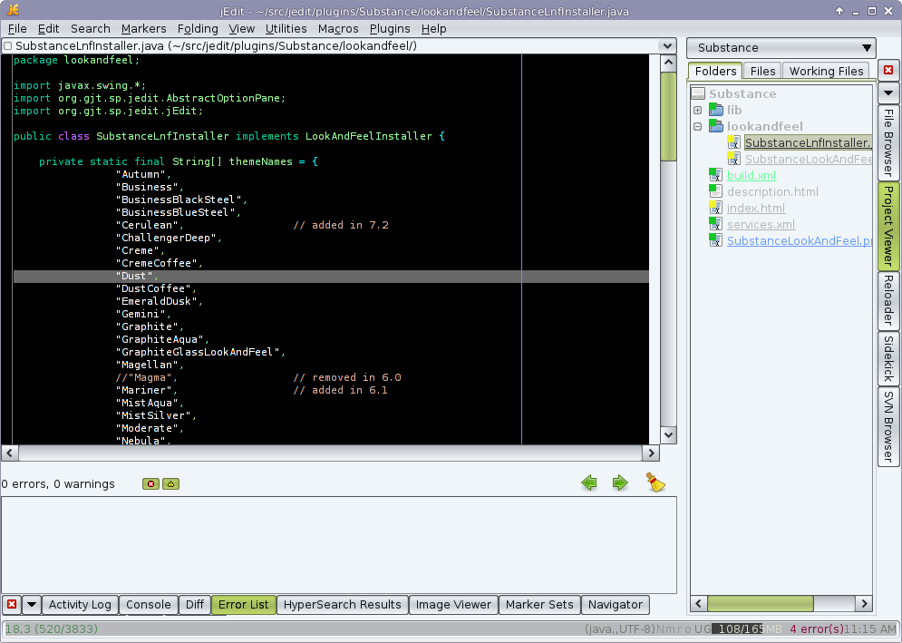
Twilight theme with Zenburn editor scheme:

The Substance project has been resurrected by the original author, Kirill Grouchnikov. The latest release was on Oct 17. 2017. The version number of this plugin is a little odd, since it was following the forked Insubstantial project, which has died, but moved version numbers ahead. The next release from Kirill will be 8.0, so the version number of this plugin will track with that when it happens.
Substance has a BSD license:
Copyright (c) 2005-2010 Substance, Kirill Grouchnikov.
All Rights Reserved.
Redistribution and use in source and binary forms, with or without modification,
are permitted provided that the following conditions are met:
Redistributions of source code must retain the above copyright notice,
this list of conditions and the following disclaimer.
Redistributions in binary form must reproduce the above copyright notice,
this list of conditions and the following disclaimer in the documentation
and/or other materials provided with the distribution.
Neither the names of Kirill Grouchnikov nor the names of its contributors
may be used to endorse or promote products derived from this software
without specific prior written permission.
THIS SOFTWARE IS PROVIDED BY THE COPYRIGHT HOLDERS AND CONTRIBUTORS "AS IS"
AND ANY EXPRESS OR IMPLIED WARRANTIES, INCLUDING, BUT NOT LIMITED TO, THE
IMPLIED WARRANTIES OF MERCHANTABILITY AND FITNESS FOR A PARTICULAR PURPOSE
ARE DISCLAIMED. IN NO EVENT SHALL THE COPYRIGHT OWNER OR CONTRIBUTORS BE
LIABLE FOR ANY DIRECT, INDIRECT, INCIDENTAL, SPECIAL, EXEMPLARY, OR
CONSEQUENTIAL DAMAGES (INCLUDING, BUT NOT LIMITED TO, PROCUREMENT OF
SUBSTITUTE GOODS OR SERVICES; LOSS OF USE, DATA, OR PROFITS; OR BUSINESS
INTERRUPTION) HOWEVER CAUSED AND ON ANY THEORY OF LIABILITY, WHETHER IN
CONTRACT, STRICT LIABILITY, OR TORT (INCLUDING NEGLIGENCE OR OTHERWISE)
ARISING IN ANY WAY OUT OF THE USE OF THIS SOFTWARE, EVEN IF ADVISED OF THE
POSSIBILITY OF SUCH DAMAGE.